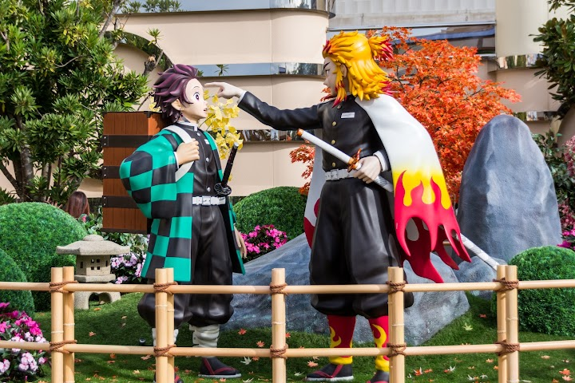
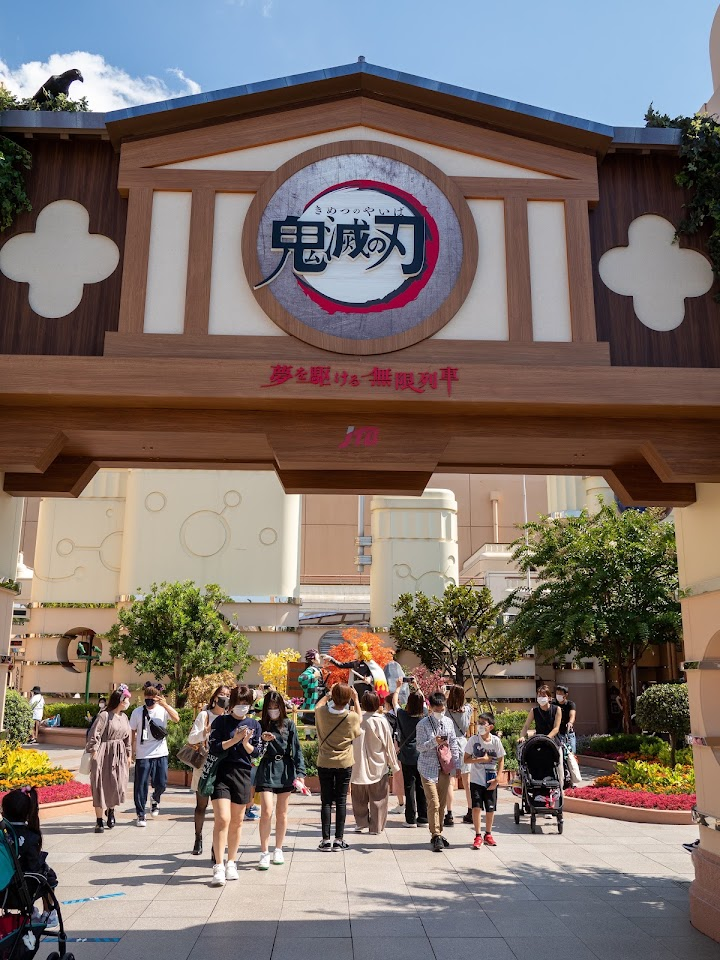
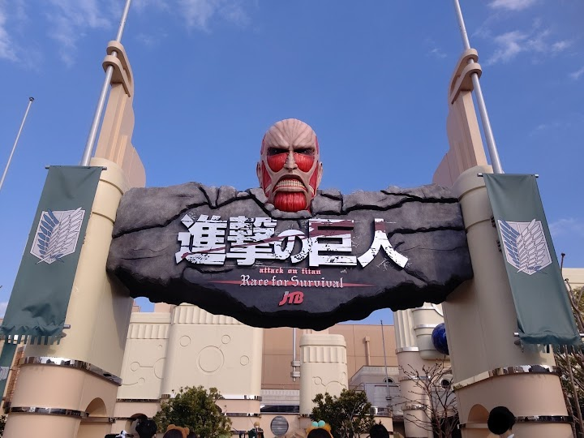
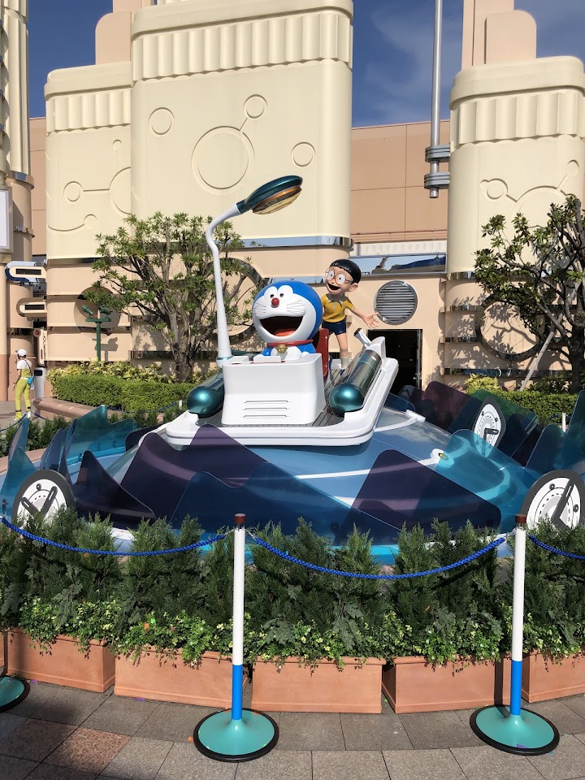
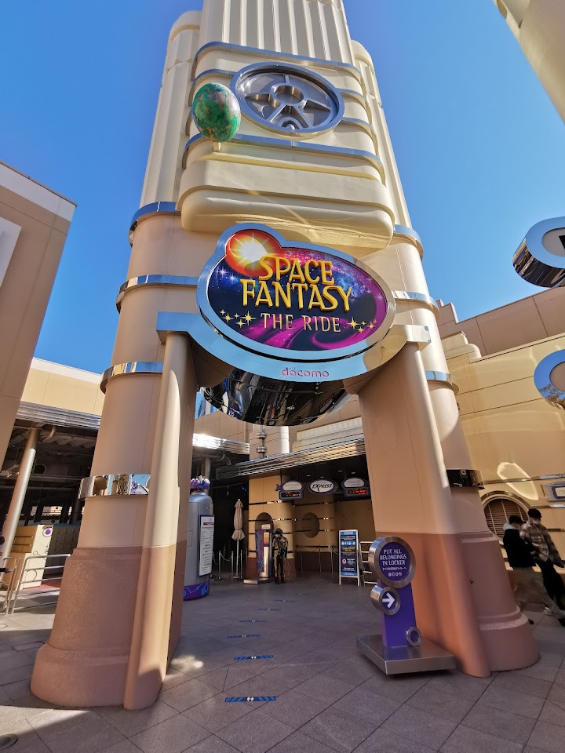

← Back to the itinerary
Space Fantasy: The Ride (check: shown as temporarily closed)
Japan, 〒554-0031 Osaka, Konohana Ward, Sakurajima, 2-chōme−1−１ ユニバーサル・スタジオ・ジャパン ハリウッド・エリア
Opened in 2010, this popular, spinning roller coaster features special effects & immersive theming.
Open in Google Maps (street view, more photos and reviews there)
 Photo: Oh Aki (Google Maps)
Photo: Oh Aki (Google Maps)
Photo: M T (Google Maps)
Photo: TKYK (Google Maps)
Photo: ゆき (Google Maps)
Photo: Toshi (Google Maps)
Photo: massa futa (Google Maps)No visitor tips about finding this place were available; use the Google Maps link.